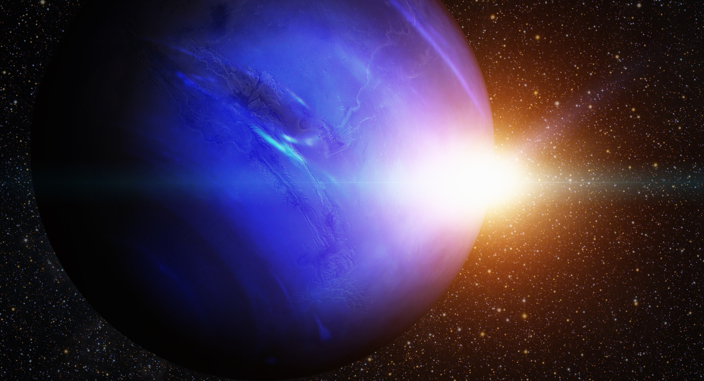

Overview
Neptune is the eighth planet from the Sun, making it the most distant in the solar
system. This gas giant may have formed much closer to the
Sun in the early solar system history before migrating out to its current position.
Dark, cold, and whipped by supersonic winds, ice giant Neptune
is the eighth and most distant planet in our solar system.t is not visible to the
naked eye and was first observed in 1846. Its position was
determined using mathematical predictions. It was named after the Roman god of the sea.